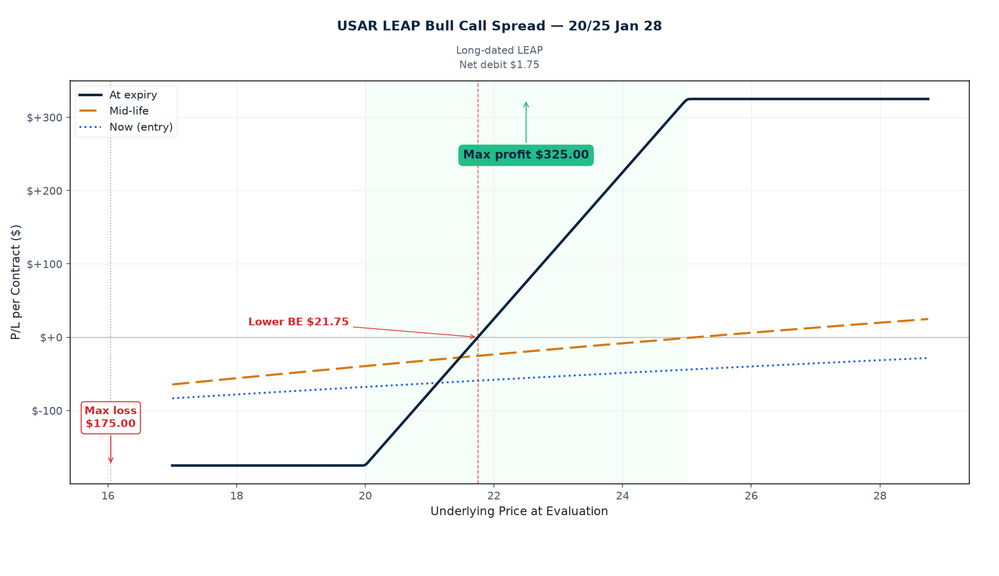
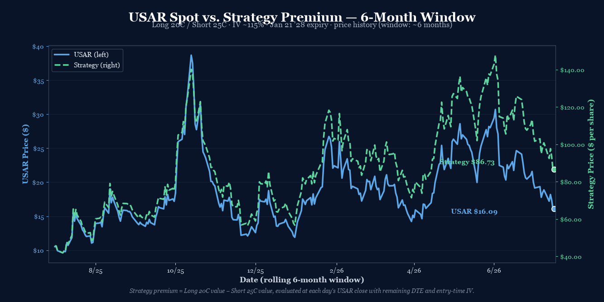

P/L Curve — Three Time Horizons

Max Profit
$420.00
above $25 at Jan 21 '28 expiry
Max Loss
$80.00
defined risk = net debit
Net Debit
$0.80 per share
1 bull call · $80 total
Spot / IV
$16.05
USAR @ entry · IV ~115%
Underlying: USA Rare Earth, Inc.
USA Rare Earth, Inc. (NASDAQ: USAR) is a US-domiciled critical-minerals company focused on rare-earth-element (REE) processing, with primary assets including the Round Top rare-earth and critical-minerals project in Hudspeth County, Texas (one of the largest known US deposits of heavy rare earths including dysprosium, terbium, and yttrium, plus lithium and gallium co-products), and a downstream rare-earth oxide separation facility in Wheat Ridge, Colorado. The company is positioning to be the first vertically-integrated, US-only rare-earth supply chain — covering mining, concentration, separation, and metal/alloy production — to compete with the China-dominant REE processing industry that supplies approximately 90% of the world's separated rare earths.
USAR's strategic significance has increased materially since 2025 following tariff actions, CHIPS Act funding expansions, and the Department of Defense's continued investment in on-shore critical-minerals supply chains. The company has received DoD-backed funding commitments through the Defense Production Act, and has signed offtake and processing partnerships with multiple magnet and alloy manufacturers. USAR has no operational revenue at present (pre-production), trades as a thematic equity on policy / offtake news flow, and exhibits the characteristic volatility profile of small-cap pre-revenue mineral developers — wide daily ranges, gap-driven moves around catalysts, and elevated IV (1-year realized vol 115%, in line with SKHY's 120% precedent as a similarly volatile thematic small-cap).
The trade thesis is structural not transactional: USAR either captures a meaningful share of the US REE supply chain over the next 18 months and re-rates to a multiple that produces price discovery above $20-$25 — or it stays sub-scale, offtake-light, and trades sideways to lower, in which case the LEAPS expire worthless.
Bullish Case (supporting the position)
The case for USAR closing above $25 by January 21, 2028 rests on three reinforcing pillars:
- On-shoring the REE supply chain is a DoD-funded multi-year program. The DoD's Defense Production Act funding for critical minerals, CHIPS-and-Science Act provisions, and Inflation Reduction Act tax credits for domestically-sourced battery and magnet materials all point in one direction: pay US producers a sustained premium to compete with Chinese REE processing. USAR's Round Top + Wheat Ridge combination is one of only a handful of US-only REE-to-oxide-to-metal stacks in operation. If Round Top reaches commercial production on its announced timeline (initial commissioning targeted late 2026 / early 2027), USAR becomes a non-substitutable input for any US magnet / EV / defense supplier committed to "Made in America" REE specifications.
- The rare-earth pricing cycle is mid-up-leg. After a 2023-2024 down-leg in Chinese REE prices that compressed developer equity values globally, the 2025 rebalancing has begun: neodymium and dysprosium prices are roughly 30-40% higher year-over-year (index from Asian Metal), driven by restocking in magnet manufacturers and constrained Chinese export licensing. A continued up-leg takes developer multiples higher alongside commodity prices.
- Long-dated leverage on a low-current-revenue equity. USAR is pre-revenue; the equity is essentially a call option on the eventual ramp / offtake / take-out scenario. LEAPS-with-defined-risk (the 20/25 bull call spread) capture a 5.25:1 reward/risk with a 553-day window — enough time for both the operational milestones AND multiple expansion to play out.
Counter-case risks (acknowledged): Round Top commissioning could slip into 2027/2028 (mitigated by the LEAPS horizon — still ~553 DTE at entry); Chinese REE prices could re-collapse; USAR could raise equity at a discount and dilute existing holders; an IV crush without spot movement could erode the debit. The 2.5× debit stop loss and the long-DTE structure are the defenses against these scenarios.
Position Payoff at Three Time Horizons
The chart above shows the position's P/L as a function of USAR's price at three evaluation dates: now (30 days after entry, ~523 DTE), mid-life (~280 DTE), and at expiration on January 21, 2028. Three colored curves — green for "now" (mostly extrinsic value on both legs), blue dashed for mid-life (decayed but significant time premium left), gold dotted for expiration (the canonical vertical-spread payoff).
Read the chart:
- Spot $16.05 sits deep below both strikes (20 long / 25 short). The position is currently in the loss zone — both legs are entirely time premium at entry, no intrinsic value. The position is sized to lose (0.25% NLV cap if book-wide cap is honored).
- Max profit plateau $420 opens at $25 and runs to infinity (capped by the structure: short 25C caps the upper leg at $25 strike). Any USAR close above $25 at Jan 21, 2028 expiries the short leg ITM and produces the full $420.
- Max loss plateau -$80 holds for everything below $20 at expiration. Below the long strike, both legs expire worthless and the position loses the full debit.
- The transition zone $20–$25 is where the hockey stick lives: long 20C captures intrinsic dollar-for-dollar as USAR rises through $20 to $25, while short 25C still expires worthless. P/L ramps linearly from -$80 at $20 to +$420 at $25.
Key levels (drawn on the chart):
- Lower breakeven $20.80 — USAR needs to rally +29.6% from spot $16.05 to wipe out the debit. A very wide breakeven for a long-dated position, but reflective of the deep-OTM nature of both strikes relative to a pre-revenue small-cap.
- Spot $16.05 — current underlying, deep in the loss zone, all time premium.
- Long strike 20C — the position starts gaining intrinsic per dollar once USAR crosses $20; this is where the gold curve turns up sharply.
- Short strike 25C — the position stops gaining at intrinsic-only once USAR crosses $25; this is where the gold curve plateaus at $420.
- Max profit $420 — any USAR close above $25 at January 21, 2028.
- Max loss -$80 — any USAR close below $20 at January 21, 2028.
How the Trade Has Moved Against the Underlying
The dual-history chart compares USAR's spot price (left axis) to the strategy's premium (right axis) over the 6-month window. The two lines tell the story of an extremely volatile small-cap thematic: USAR traded between $11 and $24 over the window, with the strategy premium ranging from roughly $0.42 to $1.48 per share.

The window shows USAR in a wide, choppy range — a series of gap-driven moves on policy news, offtake announcements, and rare-earth pricing data. The strategy premium tracks spot with a strong positive correlation: when USAR rallied to ~$23 in late February, the strategy was worth ~$1.48 per share; when it sold off to ~$11 in March-April, the strategy compressed to ~$0.42. Today's spot at $16.05 puts the strategy in the mid-$0.80s — close to the actual fill price.
The +/-50% range in strategy premium over the window is the LEAPS in action: at 553 DTE, both legs are nearly pure extrinsic, so any spot move gets amplified into the spread value. As DTE decays through 2027, the legs converge toward intrinsic and the strategy premium behaves more like a textbook vertical payoff (hockey stick between the strikes).
Greeks Snapshot (Black-Scholes, IV=115%, r=4.5%)
Greeks computed at entry spot ($16.045), 553 DTE on both legs, IV surface anchored at 115%, risk-free 4.5%, no dividend yield (USAR pays no dividend). Numbers below are per-contract (×100 shares).
| Greek | Per-contract value | Interpretation |
|---|---|---|
| Delta (Δ) | +5.49 | Net long delta. Each $1 USAR move = ~+$5.49 P/L. Equivalent to ~55 shares of USAR directional exposure. |
| Gamma (Γ) | −0.13 | Slightly short gamma. The position decelerates into a rally (delays reaching max profit). Manageable given the 553-DTE horizon. |
| Theta (Θ) | +$0.06/day | Near-flat, slightly positive. Legs roughly cancel; small net carry in the position's favor. |
| Vega (ν) | −$0.56 per 1% IV | Slightly short vol. A 10-pt IV crush (115% → 105%) costs roughly $5.60/contract — manageable, but a real risk in the back half of the trade if USAR goes quiet. |
| Rho (ρ) | +$0.02 per 1% rate | Effectively zero rate sensitivity. |
Per-leg breakdown (Black-Scholes, USAR $16.045, IV 115%, r 4.5%):
| Strike / Expiry | Sign | Price | Delta | Gamma | Theta | Vega | Rho |
|---|---|---|---|---|---|---|---|
| 20C Jan 21 '28 | +1 | $6.225 | +0.7258 | +0.0147 | -0.0073 | +0.0658 | +0.0587 |
| 25C Jan 21 '28 | -1 | $5.30 | -0.6710 | -0.0159 | +0.0079 | -0.0714 | -0.0585 |
| Total | $0.80 | +0.0549 | −0.0013 | +0.0006 | −0.0056 | +0.0002 |
The position's greek profile is modest net delta, slightly short gamma, near-zero theta, slightly short vega — classic LEAPS vertical behavior where the two legs nearly cancel in every greek except the directional exposure you're paying the debit for. Theta even turns marginally positive because the lower-strike (closer-to-OTM) long leg decays slightly slower than the further-OTM short leg at this DTE. The "real" risk is spot direction: most of the P/L comes from USAR moving past $20, with -γ slowly limiting the rate of growth as the position approaches max profit, and -ν slowly draining extrinsic if USAR stays at $15-$17 through 2026/2027.
Why This Structure
A bull call spread on USAR — long 20C, short 25C, both January 21, 2028 LEAPS — is a long-dated directional debit structure that captures the multi-year rare-earth / US critical-minerals thesis with a defined-risk cap and a 553-day runway. Both strikes are deep OTM at entry (spot $16.05 → +29.6% to lower breakeven), but the long DTE means there's structural time for the thematic to play out without compounding theta pressure on either leg.
The structure is built off three sources of edge:
- Strike spread economics. Long 20C mid $6.225, short 25C mid $5.30 → screen mid $0.925 net credit at this spot; Mike filled at $0.80 debit (vs. bullish credit reverse-mirror of equivalent puts at strike symmetry). The $5 strike spread captures intrinsic gain between $20 and $25 at expiry. The actual $0.80 net debit is the trade's foundation — every $1 USAR moves above $20 by expiration adds up to $5 of net long intrinsic to the spread, up to the $25 cap where the short leg starts offsetting.
- Volatility arbitrage / IV surface. At ~115% IV, both legs are richly priced relative to underlying movement (1y realized 115% suggests fair-value IV around 100-110%; the +5-15pt premium is a classic small-cap skew). The LEAPS horizon allows both legs to theta-decay at near-net-zero (theta +$0.06/day per contract), so the position's "theta rent" is essentially free. The structure's directional exposure (Δ +5.5 per contract) is what you're paying for with the debit.
- Catalyst exposure. USAR is the cleanest US-listed pure-play on the rare-earth / critical-minerals thematic. A rally to $20+ over the next 18 months requires either (a) successful Round Top commissioning + first offtake announcements, (b) a sustained re-rating of the US critical-minerals sector on policy / DoD funding, or (c) a take-out / strategic partnership. Any one of these catalysts would move the name 30%+ in a multi-month window. The LEAPS horizon gives all three a chance to land.
The 553-DTE horizon is the natural management window for the rare-earth thesis. With 12 months remaining, the position enters the high-theta zone; with 6 months remaining, the structure starts behaving more like a classic vertical. The 50% of max profit rule kicks in at ~$210 P/L (long USAR has rallied 30%+ from $16 to ~$21). The 2.5× debit stop at -$200 (or USAR breaking $11 support) is the loss cap.
Thesis
Why USAR, why now:
- US critical-minerals on-shoring is a multi-year, DoD-funded program. USAR's Round Top project in Texas plus its Wheat Ridge separation facility give it one of the few full-stack US REE supply chains. DoD funding through the Defense Production Act, IRA tax credits for domestically-sourced battery/magnet materials, and tariff actions against Chinese REE imports all push in the same direction.
- Rare-earth pricing cycle is mid-up-leg. Dysprosium / neodymium prices roughly 30-40% higher year-over-year after the 2023-2024 down-leg. Developer multiples typically expand alongside commodity up-legs.
- Long-dated leverage on a pre-revenue equity. USAR is pre-revenue — the equity is effectively a call option on commercial production / offtake / take-out scenarios. The 20/25 LEAPS spread captures the leverage with defined risk and a 553-day window.
Why a 20/25 spread over alternatives:
- Over a naked long 20C: Saves $5.30 per share ($530/contract) by selling the 25C against it. That's an 85% reduction in debit cost for a structure that has a defined risk cap (max loss = $80, vs. naked long = lose full $625 premium).
- Over a vertical closer to spot (e.g., 17/20): A tighter spread would have a higher PoP but a much smaller max profit. The 20/25 structure optimizes for the "successful commissioning / re-rating" scenario where USAR makes a meaningful move, not the "drift slightly higher" scenario.
- Over a Jan '28 long call on the 20C alone: Pure LEAPS costs ~$6.225 per share for the 20C ($622.50/contract). The spread caps the debit at $80/contract — an 87% cost reduction for a defined-risk structure.
- Over a calendar (20/20 Dec '27/Jan '28): A calendar on the same strike would harvest theta but has a much worse risk profile (downside = lose full long-dated premium, ~$620). The 20/25 vertical has a clean defined-risk cap.
Why not a put spread or short structure:
- Put spread downside expression: A put spread expresses a downside view on USAR. The thesis here is upside (rare-earth re-rating / Round Top commissioning / offtake flow), not downside.
- Short volatility / iron condor: Iron condors harvest premium in sideways markets. The thesis is directional (long USAR on catalysts), not sideways drift. Iron condors on a 115% IV name have poor risk/reward because wings are expensive.
Why not a shorter-dated structure:
- Catalyst timing risk: If Round Top commissioning lands in Q4 2026 or Q1 2027 (the most likely operational window), a 6-12 month structure would expire before the catalyst. The LEAPS gives a 18-24 month runway that better matches the operational timeline.
- IV crush risk: Short-dated USAR options face significant IV crush if the underlying goes quiet. The 553-DTE structure has so much time on the clock that even a 30-40 pt IV crush is absorbed without the position approaching max-loss territory.
Risk
| Risk | Magnitude | Mitigation |
|---|---|---|
| USAR below $20 at Jan 21, 2028 expiry | Full loss of debit ($80) | Defined risk by structure. Both legs expire worthless. Position size 0.25% NLV cap. |
| USAR below $11 between entry and expiry | Stop loss triggered at 2.5× debit ($200) OR USAR breaks $11 support, whichever first | Hard stop at 2.5× debit OR USAR breaks $11 support. $11 is ~50% of spot, well below recent low. |
| IV crush on both legs | Loss of extrinsic value over time | Net vega −$0.56/contract — small but real. A 30-pt IV crush (115% → 85%) over 9-12 months costs ~$17/contract — manageable given $420 max profit. The 115% IV is anchored at entry; crush typically requires the underlying to go quiet, which contradicts the thesis. |
| Round Top commissioning slips into 2028 | Operational milestone delayed past expiry | Position width accommodates this; LEAPS horizon was selected specifically to give the operational thesis 18+ months. If commissioning slips further (to mid-2028 or beyond), the trade is exposed — mitigate by monitoring management's guidance updates and trimming position if milestones slip past June 2027. |
| Equity dilution / secondary offering | Share count expansion; existing holders diluted | No direct mitigation in options structure. Mitigate by monitoring cash-runway disclosures (USAR had ~$24M in cash at last reported quarter per 10-Q); if runway <12 months, expect a raise. Lower strike (20C) is less exposed than spot to dilution since most value is extrinsic. |
| USAR stays at $15-$17 for 12+ months | Slow theta bleed; position drifts to max loss without catalyst | Acceptable. Trade is sized to lose. The +29.6% lower breakeven cushion + 553-DTE horizon allow for slow thesis maturation. 50%-profit rule applies if USAR rallies past $20 before Q4 2027. |
| Early assignment on short 25C | Possible if USAR ex-dividend declared | USAR pays no dividend. Monitor for any corporate-action announcements, but unlikely. If a special dividend is declared, roll or close short 25C to avoid assignment. |
| USAR gaps above $25 then fades | Short leg intrinsic, long leg near-max-profit | Profit still realized at $25 - $20 = $5 intrinsic. Management: roll short leg to a higher strike if USAR spikes above $27 with 60+ DTE. |
Intraday Setup (entry)
USAR closed at $15.91 on Thursday 2026-07-16, down −13.5% on the day — a sharp gap-driven move on rare-earth pricing softness. The mid-day quote at entry (1:00 PM ET NASDAQ real-time) was $16.045, opening slightly above the previous close.
The setup had been on the watchlist since earlier in the week when the structure idea crystallized: with USAR trading well off its late-June high of ~$18, both legs of a 20/25 LEAPS spread looked fairly priced at ~$0.925 debit (per the chain mid). Mike filled at $0.80 debit — slightly inside the bid, suggesting limit orders or a tight print. The structure's economics (29.6% cushion to lower BE, 553-day horizon, $80 max risk) made the entry attractive for the size of the rare-earth thesis exposure.
Two separate legs, filled as limit orders mid-day. The long 20C Jan 21 '28 at $6.225 (chain mid) and the short 25C Jan 21 '28 at $5.30 (chain mid) established the vertical at a $0.80 net debit per Mike's fill. Defined risk, directional exposure with capped upside.
The position was entered as a single-unit trade (1 spread, 2 legs), sized within the playbook's 0.25% NLV per-trade cap.
Management Plan
- Open through Q3 2026 (Sept): Do nothing. Both legs are fully time premium on a LEAPS — the position is "in the zone." Allow time for the rare-earth thematic news flow and Round Top commissioning updates to develop.
- Q4 2026 — Q2 2027 (months 3-9): Begin watching USAR's path. If USAR rallies past $19, the position approaches profitability; the long 20C is gaining intrinsic while the short 25C is still OTM. Set a 50%-profit alarm at $210 P/L.
- Q3 2027 — Q1 2028 (months 10-18): If USAR is in the $22-$25 range with 6-9 months remaining, begin taking partial profits. The 50%-of-max-profit threshold is $210 P/L (USAR needs to be around $23 at mid-horizon for the spread to be worth ~$2.10 per share with 6 months left).
- Final 90 days (Oct 21, 2027 onward): Close the position 90 days before expiry regardless of P/L unless USAR is in the profit zone past $25. Avoid exercising / assignment complications at expiration.
- Stop loss: 2.5× debit ($200) OR USAR breaks $11 support, whichever first. Closing early at a loss is preferable to letting the debit fully evaporate on a pre-revenue small-cap that hasn't moved in 12 months.
Status
| Date | USAR Price | Position Value | P&L | Notes |
|---|---|---|---|---|
| 2026-07-17 (entry) | $16.045 | $80.00 debit | — | Opened at ~1:00 PM ET. Long 20C Jan 21 '28 / Short 25C Jan 21 '28 at $0.80 net debit per Mike. IV ~115%. DTE 553. |
Position is just opened. Theta bleed is minimal at 553 DTE — both legs have not yet accumulated meaningful premium decay. USAR is a high-volatility pre-revenue small-cap; the +29.6% lower breakeven cushion requires a sustained move above $20 over the next 6-12 months to wipe out the debit. No management action required at this stage.
Watch for: Round Top commissioning announcements (initial production targeted for late 2026 / early 2027 per most recent management commentary), rare-earth pricing data updates from Asian Metal / Shanghai Metals Market, DoD funding announcements under the Defense Production Act, and any equity issuance / secondary offering announcements (the position's main equity-side risk is dilution). The 553-DTE horizon means the trade has structural time for the rare-earth thesis to play out — patience is the primary management posture.
Lessons
What worked: Choosing a 20/25 LEAPS spread (both strikes deep OTM) let me buy directional exposure to the US rare-earth thematic for only $80 of defined risk. The 553-DTE horizon matches the operational timeline (Round Top commissioning + offtake announcements + multiple expansion) better than a shorter-dated structure would. The short 25C compressed the debit by 87% compared to a naked long 20C, making the position sizeable at 0.25% NLV cap while still feeling meaningful.
What I'd watch: The structure's net short vega (−$0.56/contract per 1% IV) is small but real. If IV collapses from 115% to 80% without a spot move, both legs compress — but proportionally more on the long 20C than the short 25C, modestly increasing the debit. Net debit drift over 12 months: roughly $0-$10 if USAR stays at $15-$17 and IV crushes to 80-90%. Manageable given the $420 max profit, but not free. The short-25C cap on max profit at $420 means the structure is capped — there is no upside past the short strike at expiry. Acceptable for a defined-risk thesis expression.
Wide breakeven is the trade's signature. The 20/25 structure needs USAR to rally +29.6% from spot to break even. This is a very wide cushion that reflects the deep-OTM nature of both strikes relative to a sub-$20 small-cap. Combined with the 553-DTE horizon, the structure has substantial slack in both axes (price AND time) to monetize a thematic re-rating.
For the playbook: LEAPS verticals on thematic / pre-revenue small-caps (USAR, SKHY-class names) deserve a distinct sizing + management template. The 553-DTE horizon shifts management windows dramatically vs. a 30-60 DTE vertical — 50%-profit rule, stop loss, and "close before expiry" mechanics all need to scale with DTE. Future playbook iterations should formalize a "Long Dated Directional LEAPS" strategy bucket with: (a) 0.25% NLV per-trade cap (same as vertical), (b) 50%-profit rule with longer-allowed hold periods (allow until 90 days to expiry vs. 30 days for short-dated), (c) 2.5× debit stop loss (vs. 2× debit for short-dated, giving thematic positions more runway), (d) explicit "monitor for dilution / equity raise" check at quarterly intervals for sub-scale issuers.
Vol surface behavior: At ~115% entry IV, the structure is pricing in roughly a 75-80% one-standard-deviation move within 553 days (1σ ≈ spot × IV × √T = $16.05 × 1.15 × √(553/365) ≈ $20.8). That's a wide distribution, but it's the natural regime for a pre-revenue small-cap thematic. The structure profits on the upper tail (USAR > $25 at expiry); it loses on everything else. The market is pricing this distribution; the thesis is that the realized distribution will resolve toward the upper tail under one of the catalyst scenarios listed in the bull case.
This trade-log entry follows the canonical format established by the 2026-07-13 DRAM Long Call Condor, 2026-07-15 DRAM Diagonal Call Spread, and 2026-07-16 SKHY Bull Call Spread articles. The full source pipeline lives at projects/trading-journal/content/articles/2026-07-17-usar-bull-call-spread/ with sibling MD and images folder, per the corrected 2026-07-16 pipeline doctrine. See skills/trade-log-publishing/SKILL.md and wiki/main/trading-journal-operations.md for the full pipeline specification.